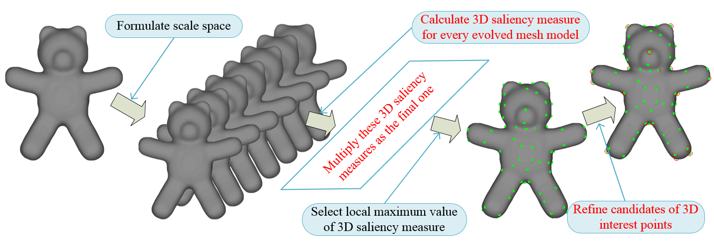
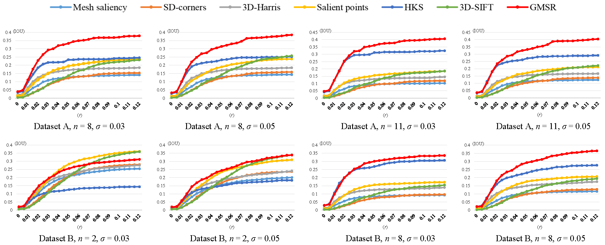

3D Interest Point Detection Based on Geometric Measures and Sparse Refinement (GMSR)
(3D interest points of chair 3D mesh model detected by the 7 algorithms)
Abstract:
Three dimensional (3D) interest point detection plays a fundamental role in computer vision. In this paper, we introduce a new method for detecting 3D interest points of 3D mesh models based on geometric measures and sparse refinement (GMSR). The key idea of our approach is to calculate the 3D
saliency measure using two novel geometric measures, which are defined in multi-scale space to distinguish 3D interest points from
edges and flat areas effectively. Those points with local maxima of
3D saliency measure are selected as the candidates of 3D interest
points. Finally, we utilize an l0 norm based optimization method
to refine the candidates of 3D interest points by constraining the
number of 3D interest points. Numerical experiments show that
the proposed GMSR based 3D interest point detector outperforms
current 6 state-of-the-art methods for different kinds of 3D mesh
models.
The method:
Please read the GMSR_paper for detail. Supplemental material is also available here.

(The outline of the proposed GMSR based 3D interest point detection algorithm.)
Evaluation Metric: Intersection Over Union (IOU) [2].
Compared 3D interest point detection algorithm: 3D Harris [3], HKS [4], 3D-SIFT [5], Salient Points [6], Mesh Saliency [7] and Scale Dependent Corners [8].

Row 1 and row 2 show the IOU curves for Dataset A and Dataset B respectively at various n/sigma pairs.
Average IOU on Dataset A and Dataset B
Mesh saliency
SD-corners
3D-Harris
Salient points
HKS
3D-SIFT
GMSR
Dataset A
0.0783
0.0758
0.1044
0.1245
0.2470
0.1085
0.2658
Dataset B
0.0738
0.0715
0.1011
0.1244
0.2106
0.0956
0.2224
Reference:
H. Dutagaci, C. P. Cheung, and A. Godil, “Evaluation of 3d interest point
detection techniques via human-generated ground truth,” The Visual
Computer, vol. 28, no. 9, pp. 901–917, 2012.
L. Teran and P. Mordohai, “3d interest point detection via discriminative
learning,” in European Conference on Computer Vision, Zurich,
Switzerland, Sept 2014.
I. Sipiran and B. Bustos, “Harris 3d: a robust extension of the harris operator
for interest point detection on 3d meshes,” The Visual Computer,
vol. 27, no. 11, pp. 963–976, 2011.
J. Sun, M. Ovsjanikov, and L. Guibas, “A concise and provably informative
multi-scale signature based on heat diffusion,” Computer Graphics
Forum, vol. 28, no. 5, pp. 1383–1392, 2009.
A. Godil and A. I. Wagan, “Salient local 3d features for 3d shape
retrieval,” Proceedings of SPIE, vol. 7864, pp. 78 640S–78 640S–8,
2011.
U. Castellani, M. Cristani, S. Fantoni, and V. Murino, “Sparse points
matching by combining 3d mesh saliency with statistical descriptors,”
Computer Graphics Forum, vol. 27, no. 2, pp. 643–652, 2008.
C. H. Lee, A. Varshney, and D. W. Jacobs, “Mesh saliency,” ACM
Transactions on Graphics, vol. 24, no. 3, pp. 659–666, 2005.
J. Novatnack and K. Nishino, “Scale-dependent 3d geometric features,”
in IEEE 11th International Conference on Computer Vision, Rio de
Janeiro, Brazil, Oct 2007.